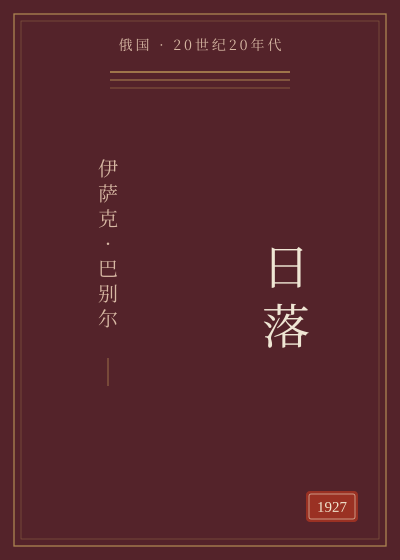
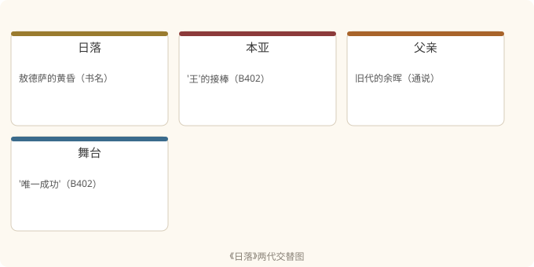

日落
一、基本信息
| 作者 | 伊萨克·巴别尔 |
|---|---|
| 成书/出版 | 1927年（Britannica B402：Zakat (Sunset, 1927)——'his only successful stage play'，含 Benya Krik） Isaac Babel — Encyclopaedia Britannica（百科全书） |
| 国别/地区 | 俄国 |
| 时代 | 近代 · 20世纪20年代 |
| 体裁 | 戏剧 |
| 语言 | 俄语 |

《日落》两代交替图（主题·结构图）
二、创作背景
Britannica（B402）：Zakat (Sunset, 1927)——'his only successful stage play, featuring Benya Krik'（唯一成功的舞台剧——含本亚·克里克）。
Britannica（B402）：巴别尔——'aphoristic precision...metaphoric extravagance'。
题材（通说待核）：本亚·克里克的'家庭'戏——摩尔多万卡的日与夜。
三、内容脉络
（通说待核）克里克家：'王'的黄昏与长兄的接棒。
（通说待核）'日落'：敖德萨的黄昏意象（书名语境——通说待核）。
四、主要人物表
| 人物 | 身份 | 说明 |
|---|---|---|
| 本亚·克里克 | '王' | （B402：Benya Krik——'a mock Jewish messiah'） |
| 父亲 | 旧一代 | （通说待核） |
五、主题与艺术特点
- '日落'：两代的交替（书名语境——通说待核）。
- '唯一成功的舞台剧'（B402）。
- 敖德萨黑帮的剧场化（B402 交叉：Tales of Odessa）。
六、影响与评论
- Britannica：'his only successful stage play'（B402）。
Isaac Babel — Encyclopaedia Britannica（百科全书） - Britannica：'Benya Krik——mock Jewish messiah'（B402 交叉）。
Isaac Babel — Encyclopaedia Britannica（百科全书）
七、阅读建议
难点
- '敖德萨'方言。
- '家庭戏'的权力。
- 《日落》中译名（《日落》）待核。
- 俄文原版。
巴别尔戏剧首选；与《骑兵军》对读。
八、待核实
- 1927年首演（Baku说）待核。
- 克里克家细节核对（通说）。
- '唯一成功'口径核对（B402已载）。